Part A
Exploring the Power of Flow Models
Twenty-six verified Part A figures cover all required report sections and graduate additions. Captions and settings were checked against archived evidence. Open a figure for its original full-resolution image. Visual quality and historical source limitations are described with each experiment.
1.1 Constructing Noisy Training Inputs
The input is my personal clock-tower photograph, center-cropped and resized to 512×512 RGB, normalized to [−1,1]. One seed-180 Gaussian noise tensor is reused at t=0.25, 0.50 and 0.75.
x_t = (1 − t) ε + t x₁. Time 0 is noise; time 1 is the clean image. Larger t retains more image information.
The same original/noise pair is used throughout Sections 1.1–1.5. Historical export captions calling this Campanile were incorrect; image identity was checked against the saved tensor.
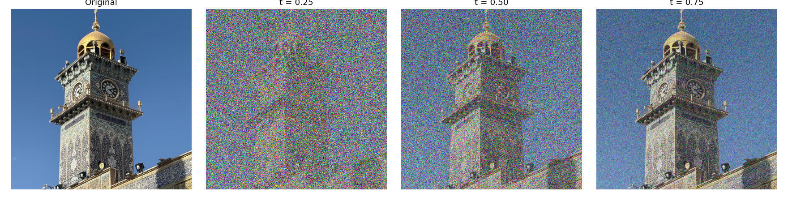
1.2 Classical Denoising
Before Gaussian filtering I restore image amplitude by dividing the noisy input by t: x_t/t = x₁ + ((1−t)/t) ε.
The sweep over sigma 1, 2, 4, 8 and 16 selects 8, 4 and 1 at t=0.25, 0.50 and 0.75. MSE is 0.0610792525, 0.0437529646 and 0.0250520054 respectively.
Averaging suppresses noise but also blurs edges. This is a classical baseline, not a learned denoiser.
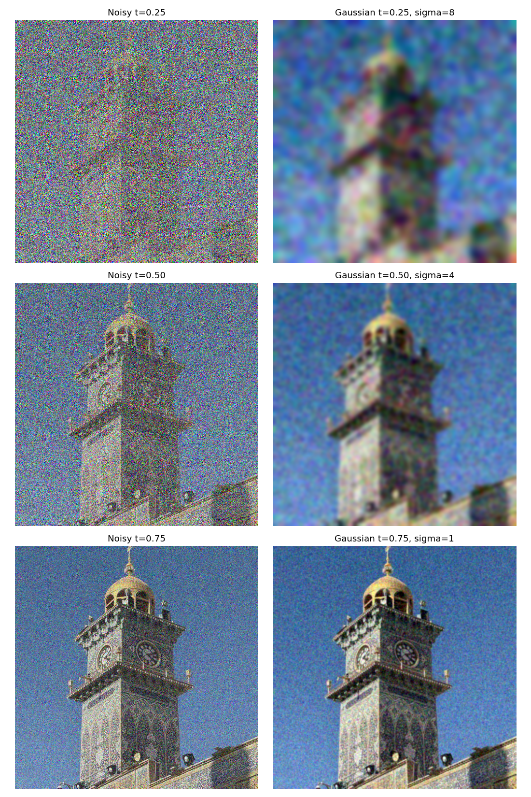
1.3 One-Step Denoising
One-step denoising extrapolates along the predicted velocity: x̂₁ = x_t + (1−t) vθ(x_t,t,c). The prediction is velocity, not noise.
Each of the three saved noisy inputs is evaluated once using “a high quality photo.” Network evaluation and integration remain float32.
At high noise the estimate can invent or distort architectural details; higher starting times preserve more of the source.
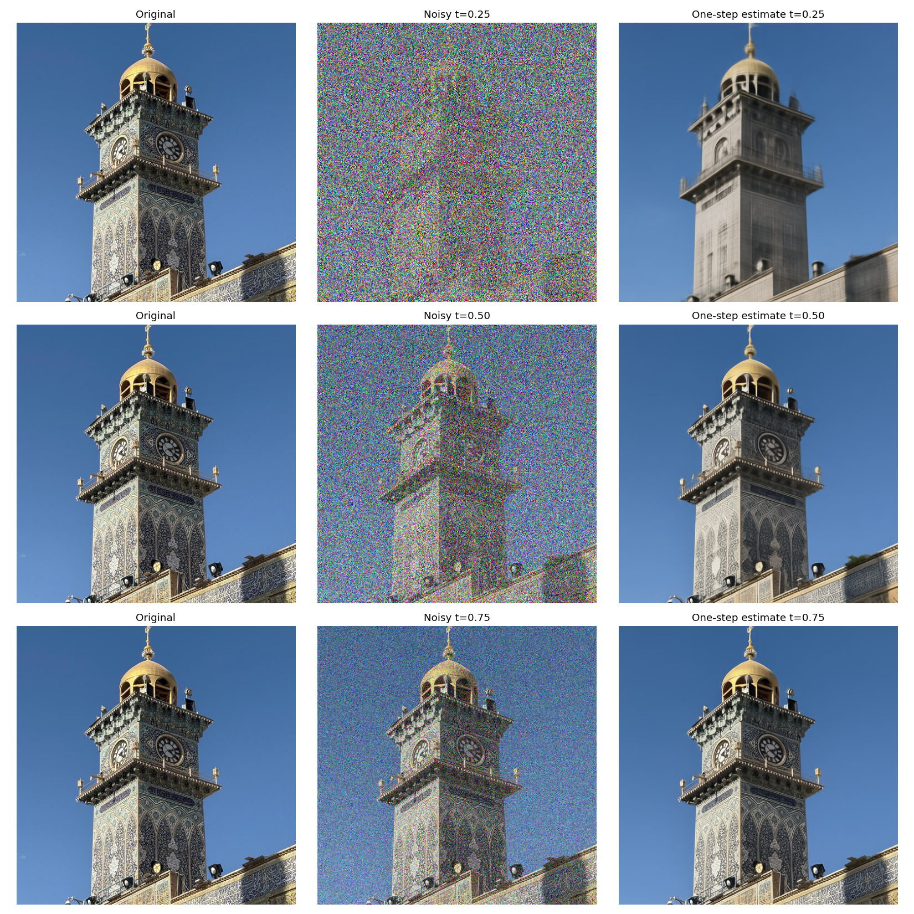
1.4 Visualizing Velocity
I compare predicted updates (1−t)vθ with the target (1−t)(x₁−ε) = x₁−x_t. Per-pixel error is sqrt(mean_RGB((predicted update − target update)²)), before clipping or display scaling.
All predicted/target update panels share a symmetric scale with zero at middle gray. Error maps use common linear limits.
Mean RGB RMS errors are 0.1038969681, 0.0716889650 and 0.0445430838 at t=0.25, 0.50 and 0.75. Smaller errors also reflect the shrinking (1−t) update; they do not alone prove a more accurate velocity field.
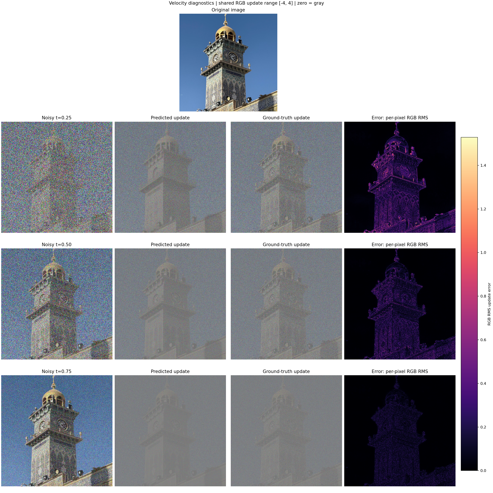
1.5 Iterative Denoising with Euler Sampling
Euler recomputes velocity after each update: x_(t+h) = x_t + h vθ(x_t,t,c). Starting from the saved t=0.50 state, h=0.02 gives 25 updates and reaches t=1.00 exactly.
The trajectory shows t=0.50, 0.60, 0.70, 0.80, 0.90 and 1.00. The methods comparison uses the same noisy input.
Measured MSE: Gaussian 0.0437529646; one-step 0.0181908794; Euler 0.0217692759. One-step is numerically best in this run; iterative sampling does not guarantee better source reconstruction.
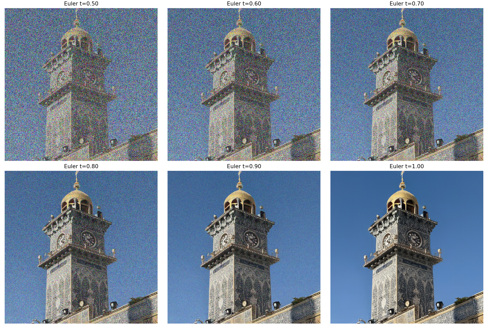
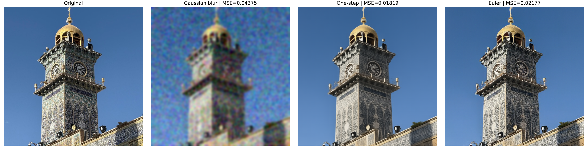
1.6 Generating Images from Noise
Starting from independent Gaussian noise, I generate five images with “a high quality photo,” seeds 180–184, 50 Euler updates per image and h=0.02. There are 250 model predictions.
The samples have portrait-like structure but some facial details are distorted. These are the authentic selected outputs, not newly regenerated images.
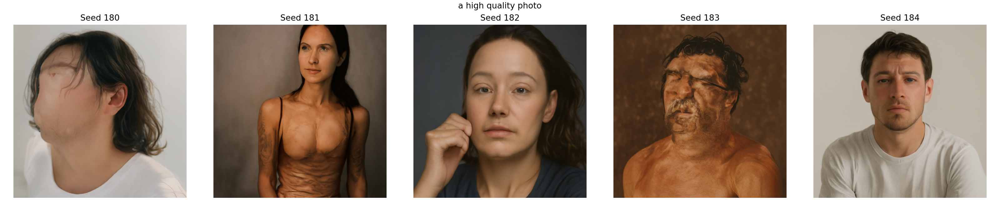
2.1 Classifier-Free Guidance (CFG)
Part A guidance is v_cfg = v_cond + w(v_cond − v_uncond), with w=7 and an encoded empty-string unconditional prompt. Both predictions use the same state and time.
The five guided samples reuse exactly the initial tensors from Section 1.6, seeds 180–184. Their correspondence was independently verified. Each guided trajectory uses 50 Euler updates and 100 predictions; h=0.02.
Guidance strengthens prompt coherence in this comparison, especially for some faces, while distortions remain. The side-by-side grid keeps ordinary and guided samples matched by seed.
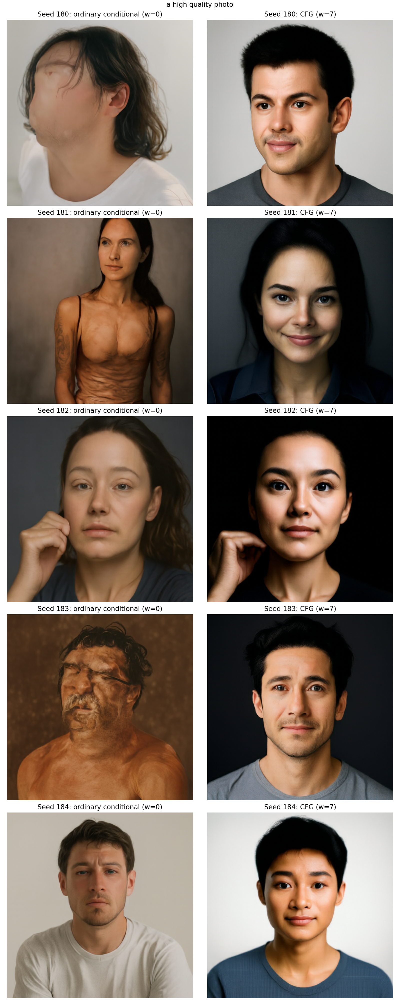
3.1 Image-to-Image Editing
SDEdit initializes x_start = (1−t_start) ε + t_start x₁ and integrates to 1 with CFG 7 and h=0.02. Every sweep below includes 0.02, 0.04, 0.06, 0.10, 0.14, 0.25 and 0.50, reusing one noise tensor per input.
Six sources are shown: Campanile, my clock tower, my Range Rover photograph, Hokusai’s Great Wave, house drawing and sailboat drawing. Lower starting times allow larger changes; higher times retain more input structure.
The student directly confirms personal hand-drawn authorship of house and sailboat after identifying the exact archived originals. Hash matching verifies file identity separately. Earlier provenance descriptions conflict and remain preserved in the private historical records; independent creation-process evidence is not claimed.
The selected sailboat uses seed 197 and contrast factor 2.5. The original generating cell is missing; the later seed-198 run is a separate alternative. Verified figures remain valid evidence, but exact historical code reproducibility is limited.
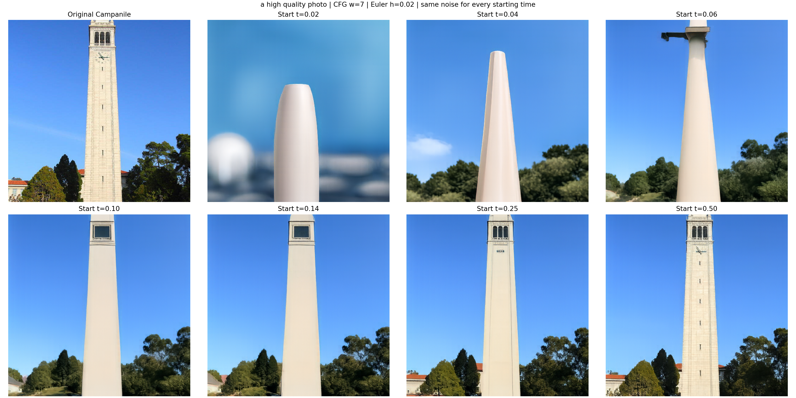
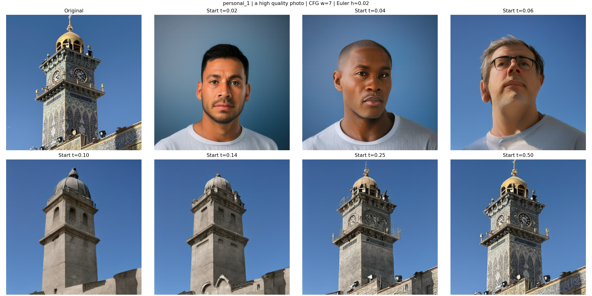
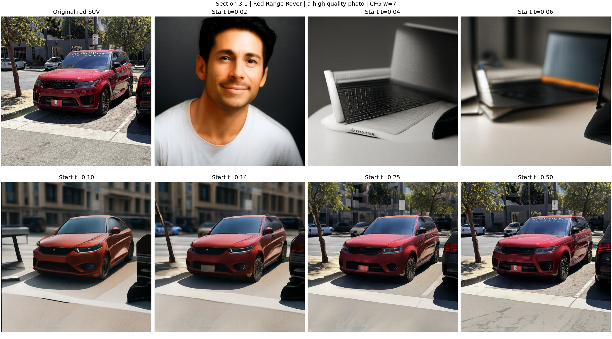
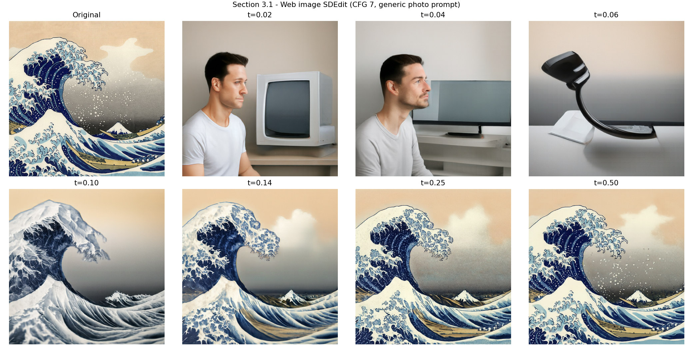
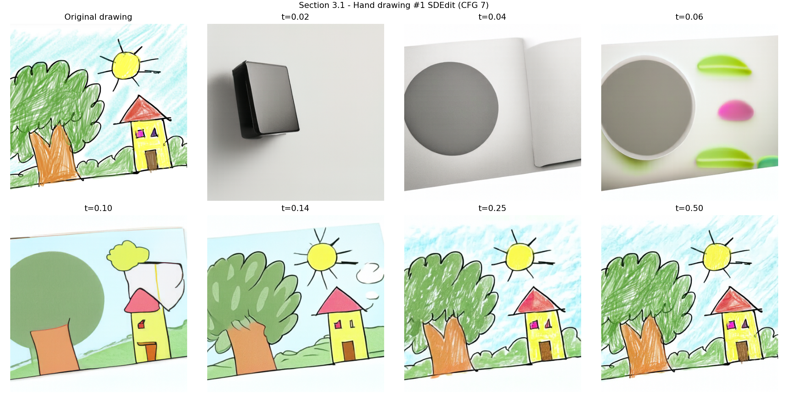
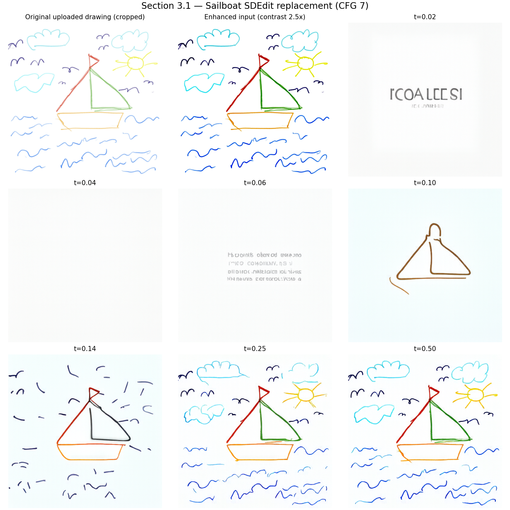
3.2 Text-Guided Image Editing
For text-guided editing I keep each source’s noise/seed and the same seven starting times, replacing only the generic prompt with the exact selected text recorded under each figure. CFG is 7 and h=0.02.
Campanile is guided toward a red-and-white lighthouse; clock tower toward a neon skyscraper; Range Rover toward an electric luxury SUV. Lower starting times permit stronger semantic changes; high starting times preserve source layout.
All three seven-time sweeps are shown. The Campanile text-edit generating cell is absent from the current downloaded log; its selected figures, metadata and settings are preserved.
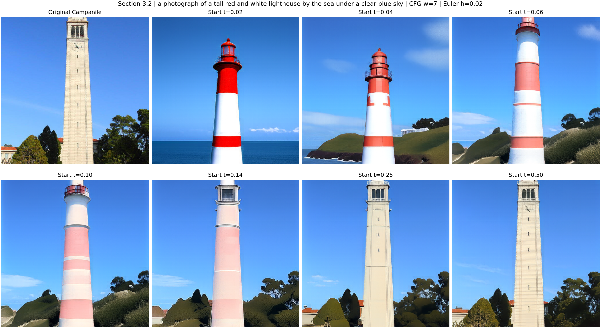
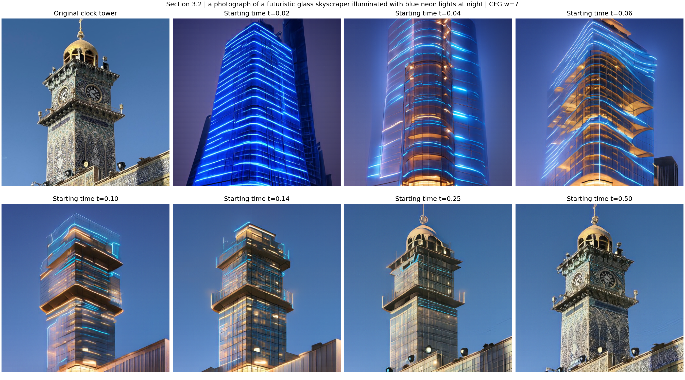
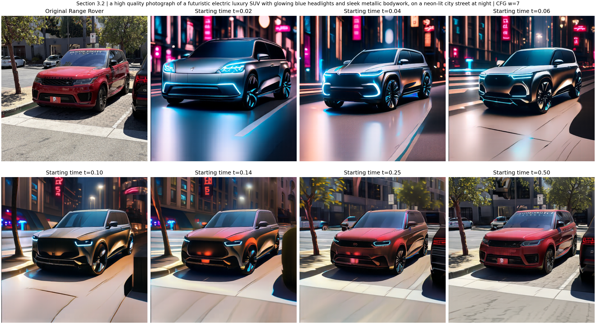
3.3 Visual Anagrams
For a 180° anagram, F flips both spatial axes. The sampler uses ½[v_cfg(x,t,c₁) + F(v_cfg(F(x),t,c₂))]. The transformed velocity is aligned back to the original frame before averaging.
Old man/campfire uses seed 186. Raw views are preserved separately from gamma-0.55 presentation views; gamma acts on existing 8-bit PNGs and is not new inference.
Village/horse uses seed 187, selected retry2, CFG 7 and 50 Euler steps (200 sampling predictions). Four prompt pairs were first screened using endpoint proxies; those screening evaluations are additional to the final sampling count. Earlier candidates remain in the protected records.
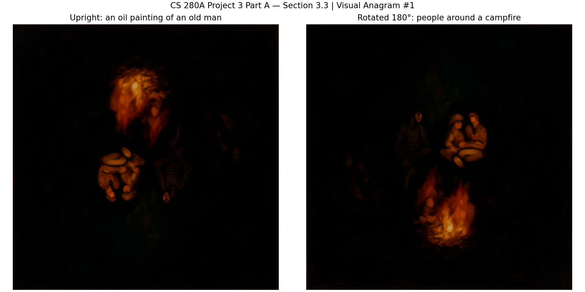
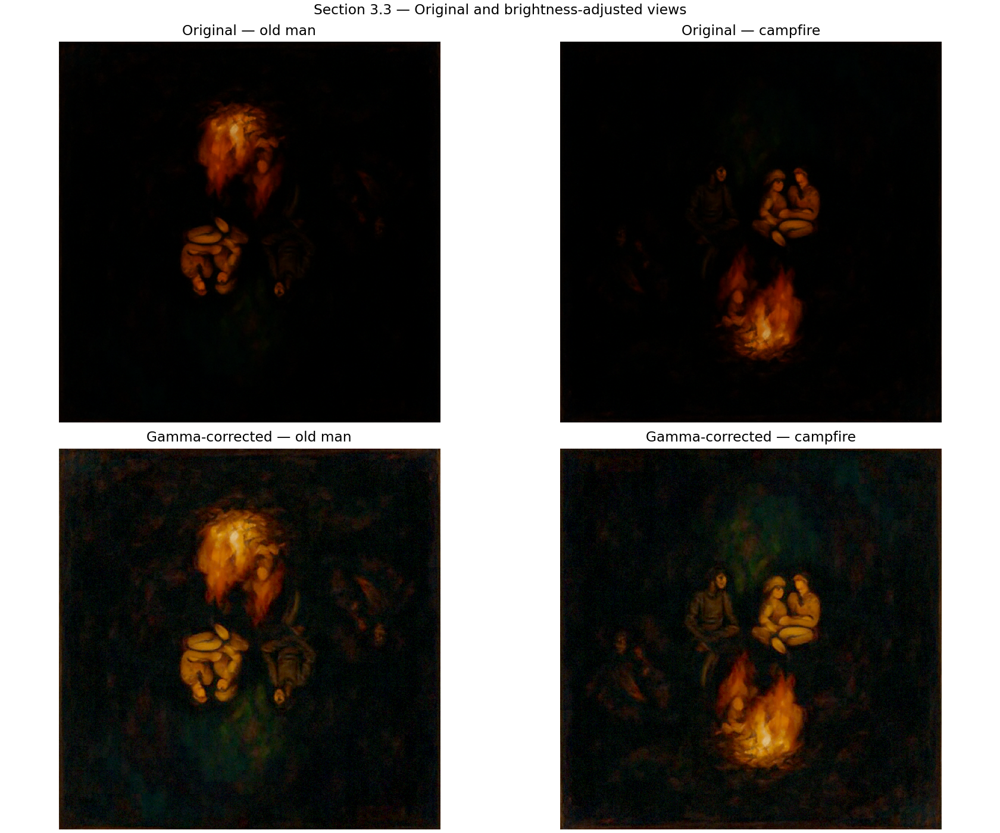
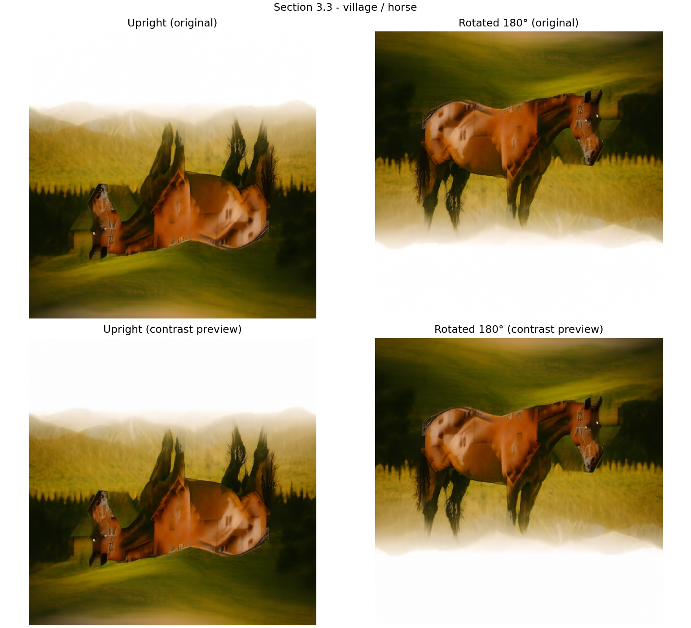
3.4 Hybrid Images
Hybrid velocity combines low-frequency structure from one prompt and high-frequency detail from the other: G(v_low) + v_high − G(v_high). Both CFG branches evaluate the same state/time. Gaussian kernel is 265 and sigma is 16 at 512×512.
Selected candidates are distant skull / near waterfall (seed 188) and distant black cat / near forest retry1 (seed 190). Each uses CFG 7, h=0.02, 50 updates and 200 predictions. The seed-201 face/city alternative is not substituted.
The skull and cat interpretations are subtle and incomplete. Full and reduced views show the intended near/distant readings without claiming flawless illusions. Cell 67’s saved existing-destination error was a refused later invocation; the earlier selected retry1 archive was separately verified.
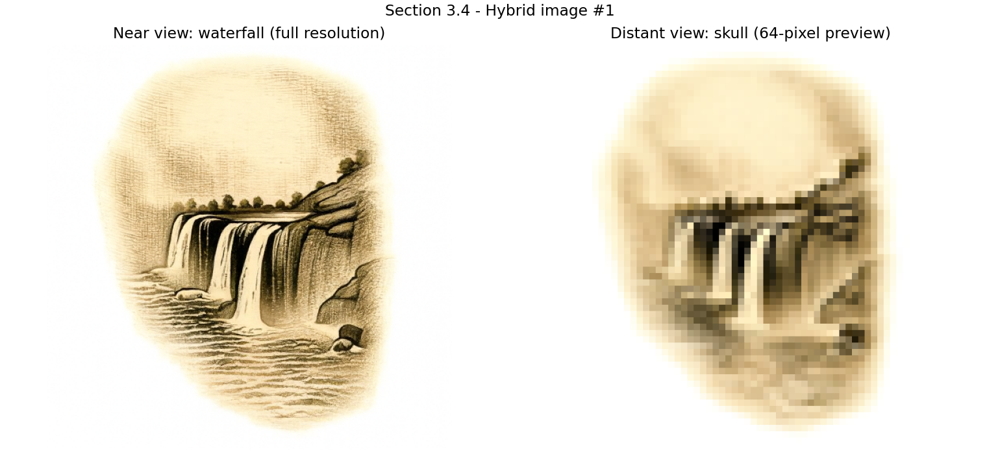
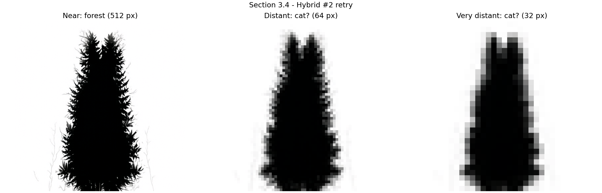
CS 280A Graduate Bells & Whistles
These are two additional transformation anagrams beyond the standard 180° pair: a 90° lighthouse/train rotation and a 2×2 jigsaw woman/window versus flowers/table permutation. Both views are shown for each.
For rotation, F=rot90(+1) and F⁻¹=rot90(−1). Seed 191, CFG 7, 50 Euler steps and 200 predictions. For jigsaw, output tiles take input indices (2,0,3,1), with inverse (1,3,0,2); seed 199 retry1 is selected. Seed 192 is the earlier baseline. The flowers/table interpretation remains weak despite an exact invertible transformation.
The course logo starts from a programmatic PIL sketch, uses seed-193 flow edits at t=0.30 and 0.50, selects the 0.50 edit, then adds typography and canvas design with PIL. The final lettering is graphic compositing, not model-generated text.
Historical Colab A100 runs produced these images with pinned PixNerd and Qwen assets. The reorganized Part A notebook is an unexecuted draft; neither fresh-runtime reproduction nor a new inference run is claimed.
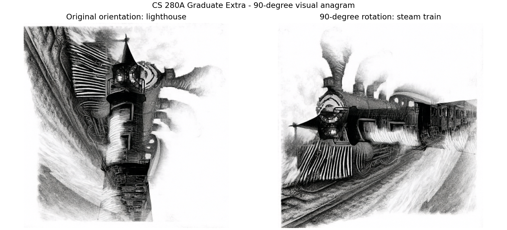
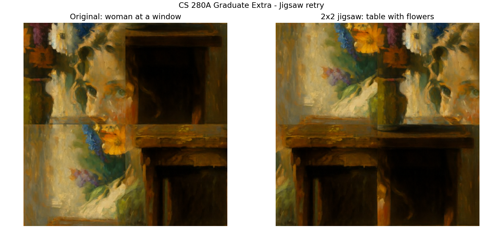
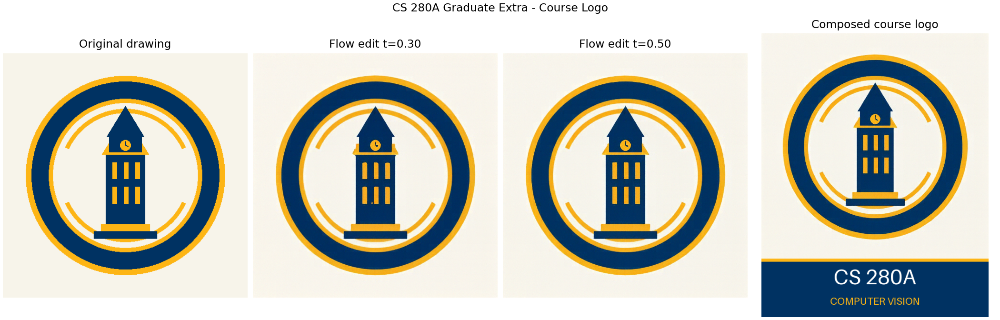
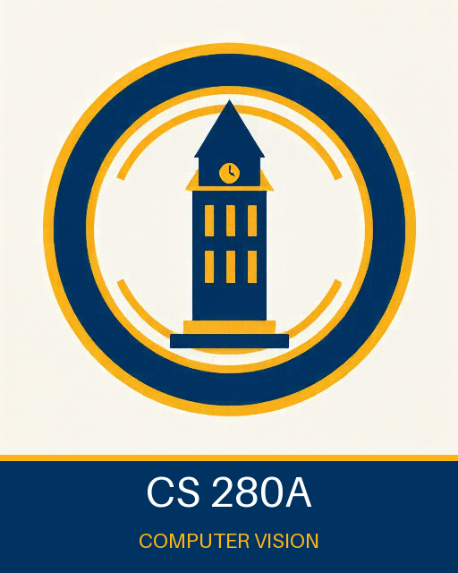
Imported figures follow the Part A figure-import contract. See the verified figure records and archive provenance and source attribution. All required Part A experiment groups are represented; documented reproducibility limitations remain.